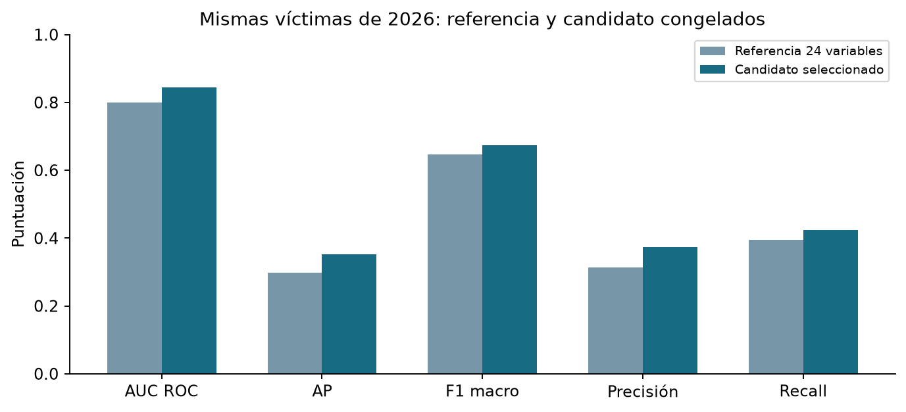
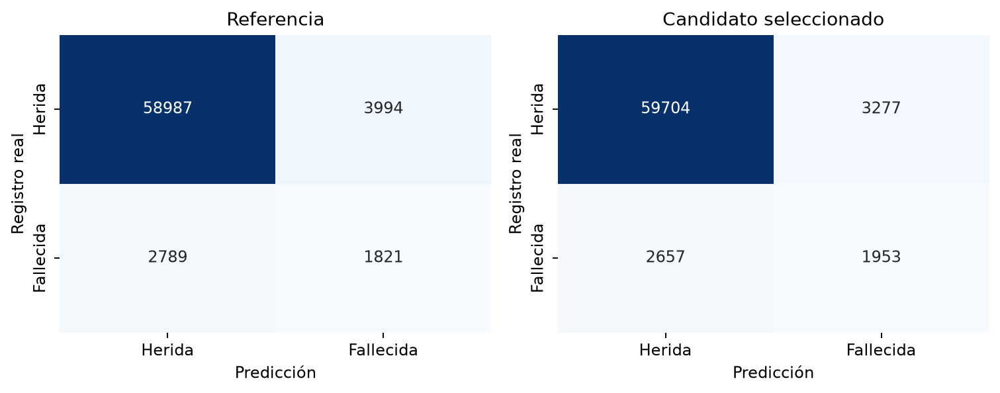

Proyecto Integrador · Alan Alcaraz, Leandro Ferreira y Jorge Rios · 31/10/2026
Segunda versión: más contexto del accidente
Ronda limitada a ocho configuraciones y tres cortes temporales. Se conservó el experimento anterior y se seleccionó Contexto_regularizado_natural antes de abrir la nueva prueba de 2026.
La nueva prueba contiene 67.591 víctimas, entre 2026-01-01 y 2026-09-30. Es el período publicado, no todo 2026. Ambos modelos utilizan idénticas víctimas y los mismos años de entrenamiento/calibración.
Comparación de resultados
| Modelo | Evaluación | AUC | AP | F1 macro | Precisión | Recall |
|---|
| Referencia | 2025 retrospectivo | 0.806 | 0.302 | 0.651 | 31.8% | 40.6% |
| Referencia | 2026 prueba nueva | 0.799 | 0.297 | 0.647 | 31.3% | 39.5% |
| Candidato | 2025 retrospectivo | 0.847 | 0.361 | 0.679 | 38.3% | 43.0% |
| Candidato | 2026 prueba nueva | 0.845 | 0.352 | 0.675 | 37.3% | 42.4% |
AUC y AP resumen ordenamiento; precisión y recall dependen del umbral elegido con 2024. La comparación de 2025 es retrospectiva porque sus resultados anteriores ya se conocían.

Qué se agregó
El ganador utiliza 31 características: las 24 previas más seis cantidades de contexto vehicular y la familia del otro vehículo. Marca aproximada y trazado descompuesto se probaron en otras variantes; no quedaron en el ganador. También se compararon ajustes de complejidad y regularización. El contexto usa la exportación completa, incluidos ilesos y vehículos sin persona, deduplicada por claves reales. No incorpora conteos de heridos o muertos.

Archivos para revisar
Material de apoyo con asistencia de IA. El grupo debe comprender y adoptar las decisiones y conclusiones. La predicción caracteriza siniestros observados con lesionados; no es riesgo previo de accidentarse ni un modelo clínico validado.